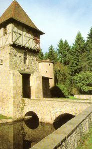
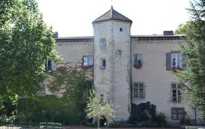
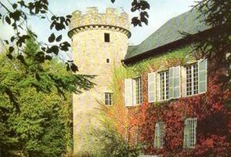
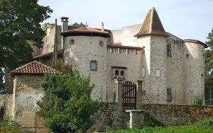
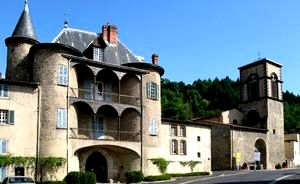
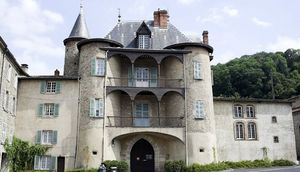
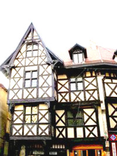
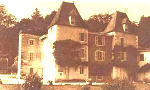

Recensement Jean-Claude Truffet
| Département | 63 — Puy-de-Dôme |
| Canton | Thiers |
| Commune | Thiers |
| Type d'édifice | Château |
| Période d'origine | XV-XVI-XX |








Plusieurs châteaux à Thiers dont 'histoire de la ville semble remonter à 1371. la baronnie de Thiers passe aux ducs de Bourbon. je n'ai pas information pour certain. CROC, de la famille du Croc, on se souviendra de Philibert, maître d'hôtel ordinaire de Charles IX, nommé ambassadeur auprès de Marie Stuart, reine d'Écosse, en 1565. le Croc devient propriété de la famille Perdrigeon qui lui donne son nom. HORTS, construit au XVIe siècle par la famille Ossandon, il passe ensuite aux Riberolles. FRANCSEJOUR (ou Freiz-séjour), près du Moûtier, a été construit à la fin du XVe siècle pour Jehan Petidé, prévôt de l'église de Thiers et conseiller de Jean de Bourbon. CHASSAIGNE, le manoir remonte au XVe siècle. En 1720, le marquis de Simane, arrivant dAix-en-Provence, acquiert la propriété et y crée des jardins, transforme la propriété. Les propriétaires actuels achètent le domaine en 1986 et décident de recréer les jardins. BERAUX furent édifiés au XVIe siècle par Jean Archimbaud, un riche marchand. CHAMPS, manoir , avant 1590 la terre appartient à Samard de Névrezé, contrôleur des guerres, construit au XVIIe siècle pour la famille Grandsaigne, qui s'alliera avec celle de Blaise Pascal. Au XVIIIe siècle, son nouveau propriétaire, subdélégué de Thiers, y a implanté une magnanerie. MOLLES, manoir a peut-être abrité les derniers jours du comédien Montdory. Sa fille Catherine avait en effet épousé son propriétaire l'année précédente.
PERDIGON, le 15 mars 1545, Philibert du Croc rend hommage au Dauphin d'Auvergne pour sa seigneurie du Croc. En 1714, la fille de Jean-Claude du Croc épouse Emmanuel Gaspard, marquis du Bourg, auquel elle apporte tous ses biens. Le château passe aux de La Mure du Chautois, puis aux Fabry. En 1805, François Perdrigeon, notaire, l'achète . En 1868, Hélène Perdigeon le porte par mariage à Charles Octave de Viry.
VALLERIE; relais de Chasse du XVIIIe siècle chambres d'hôtes.
Croc au nord de la ville, date du début du XIVe siècle comme en témoignent les inscriptions sur les deux tours, et présente encore un bel aspect de demeure fortifiée Les murs ont jusqu'à deux mètres d'épaisseur avec une base en pierre, le reste est maçonné avec un pisé très dur. On franchit le fossé qui borde le château sur un pont de pierre qui a remplacé le pont-levis au XVIIIe siècle. L'édifice a défendu la ville pendant les guerres de religion. Un vaste parc et une ferme très ancienne jouxtent l'édifice. Horts situé au sommet de la ville a subi des modifications aux XVIIIe et XIXe siècles mais conserve lui aussi un aspect de château fort. Les remparts forment un carré encadrant une cour centrale et sont flanqués d'une tour à chaque angle. Francsejour. Cette élégante gentilhommière a conservé son bel ensemble de bâtiments agricoles. Chassaigne manoir gothique, sa construction date de la fin du XVe siècle. Au premier étage, on trouve la grande galerie ainsi qu'une chapelle bien conservée. Perdrigon construit au XIVe siècle, situé à 3.5 km du bourg, au nord des Gamiers vers Puy-Guillaume. Enceinte quadrangulaire à flanquements circulaires d'angle (il en reste deux), cernée de douves. La porte-tour est défendue par une archère; sa partie supérieure (refaite) présente deux courtes ouvertures d'un pont-levis à chaine et un couronnement en pan de bois.
Ducs de Bourbon
"
Château de Thiers, de Francsejour, de Moutiers, de Chassaigne, de Beraux, de Molles, de Perdigon de Croc, de Horts et de Vallerie